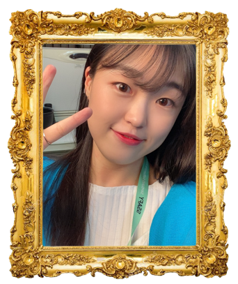
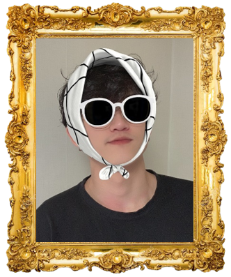

-
SSAATCHI GALLERY에 오신 것을 환영합니다.
SSAATCHI GALLERY는 SSAFY와 런던에 위치한 유명 미술관인 SAATCHI GALLERY가 합쳐져
만들어진 이름으로 SSAFY의 가장 대표적인 온라인 GALLERY로의 성장을 바라며 지어진 이름입니다.그림을 사랑하는 모두를 위한 공간을 만들고자하는 마음에서 시작된 SSAATCHI GALLERY는
모두 아티스트가 될 수 있는 공간, 아티스트와 게스트 모두를 위한 공간으로 성장할 것입니다.누구나 나만의 전시회를 열 수 있는 공간, 집에서도 전시회를 즐길 수 있는 공간
'비대면 온라인 미술 작품 전시관 SSAATCHI GALLERY'
-

Docent OJS는 큐레이터(Docent)와 팀원 이니셜(OJS)를 합하여 만들어진 팀명으로 SSAATCHI GALLERY를
사용해주시는 작가분들과 게스트분들에게 전시관의 관리자로서 만족스러운 전시회를 제공하기 위해 최선을 다하고 있습니다. -
세번째꺼내요오오옹
-
네번째거 내요옹